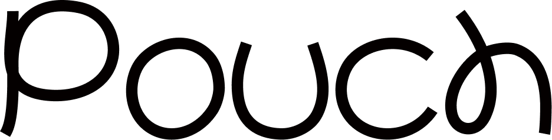
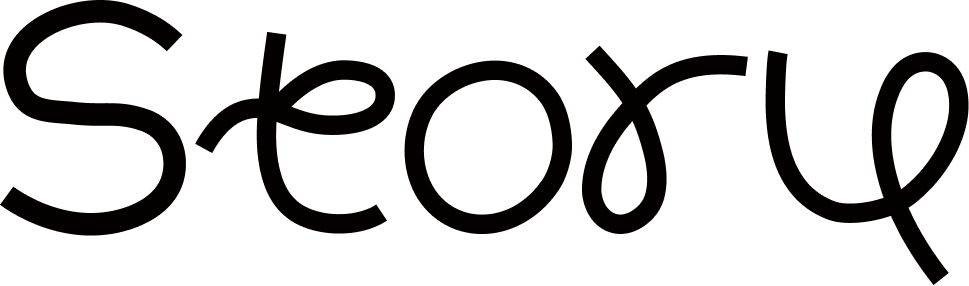
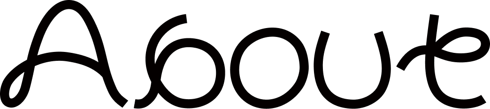

(01) MADEUP Pouch
MADEUP is a bojagi pouch made of sheer organza, the fabric of hanbok.
한복의 반투명 오간자로 만든 보따리 파우치.



(01) MADEUP Pouch
MADEUP is a bojagi pouch made of sheer organza, the fabric of hanbok.
한복의 반투명 오간자로 만든 보따리 파우치.
(02) Open
Pull the cord and the cloth gathers into a pouch; loosen it and it opens flat.
끈을 당기면 천이 모여 주머니가 되고, 풀면 펼쳐집니다.
(03) Detail
(04) Close
The traditional knot is not decoration. It is the handle.
전통 매듭은 장식이 아니라 손잡이입니다.
mjc2team@yahoo.com